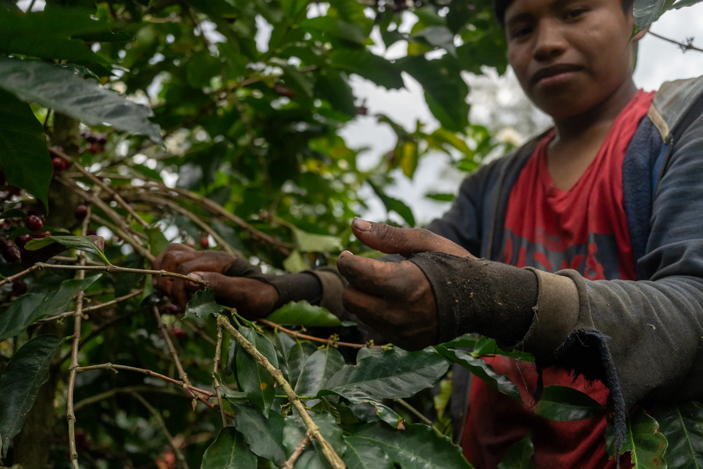
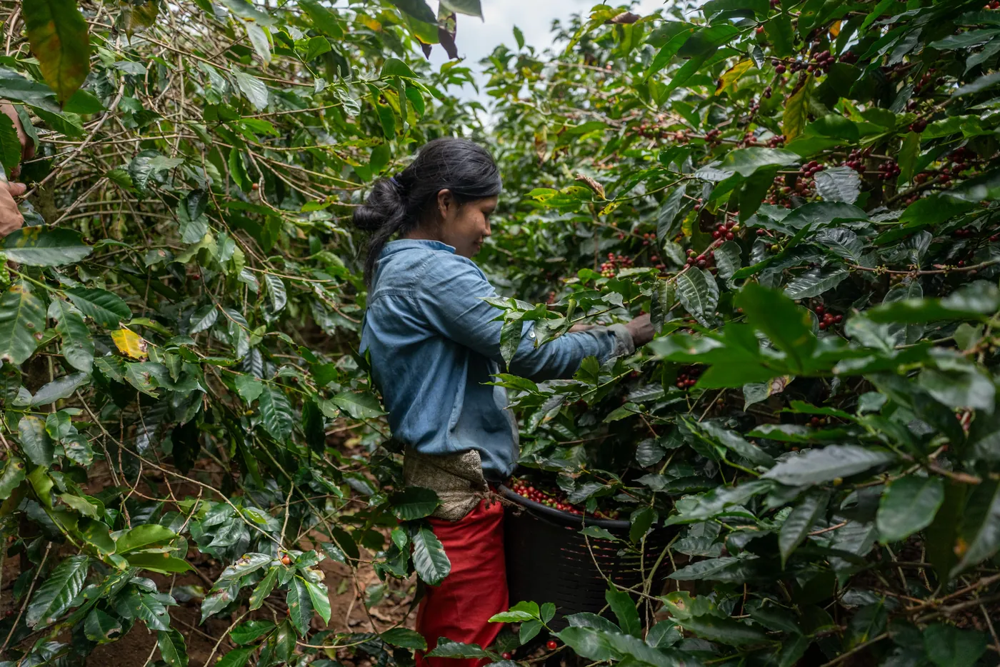

Misión

Naranjo, Alajuela
Caficultura con propósito.
Compartimos aprendizajes finca por finca para cuidar el suelo, recuperar la biodiversidad y fortalecer la vida en nuestras comunidades.
Nuestra asociación
Sobre nosotros
Hay formas de producir café.
Y hay formas de trabajar la tierra con propósito.
NARECAFÉ nace en Naranjo, desde el trabajo conjunto de productores que decidieron hacer las cosas diferente: cuidar el suelo, recuperar la biodiversidad y fortalecer la vida en sus comunidades.
No es solo lo que se cultiva.
Es cómo se cultiva, con quién y para qué.
Historia institucional por completar
Espacio reservado para el año de creación, la Escuela de Campo y otros datos verificables.


Visión
Ser una organización líder en la caficultura sostenible y regenerativa, capaz de transformar el paisaje productivo de Naranjo mediante prácticas que protejan el ambiente, fortalezcan la economía familiar y generen un café de alto valor para las generaciones presentes y futuras.
En la finca
Café regenerativo, aprendizaje compartido
Estas prácticas orientan el trabajo de NARECAFÉ y pueden conocerse con sencillez, desde la experiencia de las fincas.
Suelo vivo
El suelo es parte fundamental de la finca y de su capacidad para sostener vida.
Bioinsumos de la finca
El aprendizaje se comparte desde los recursos y las prácticas que se construyen en cada finca.
Café bajo sombra
El café convive con árboles y biodiversidad como parte del paisaje productivo.

Aprendizaje en comunidad
Servicios
Los contenidos específicos están en preparación. Por ahora presentamos las áreas confirmadas de trabajo.
Acompañamiento al productor en la finca
Información por completar.
Cursos de caficultura
Información por completar.
Fincas, personas y aprendizajes
Galería
Un recorrido visual por la caficultura regenerativa de Naranjo.
Conversamos
Contacto
Si desea conocer a NARECAFÉ o comunicarse con la asociación, puede usar cualquiera de nuestros canales.
- WhatsApp+506 8851 0663
- Correonarecafecr@gmail.com
- Instagram@narecafe.njo
- FacebookVer perfil
- TikTok@narecafe.njo